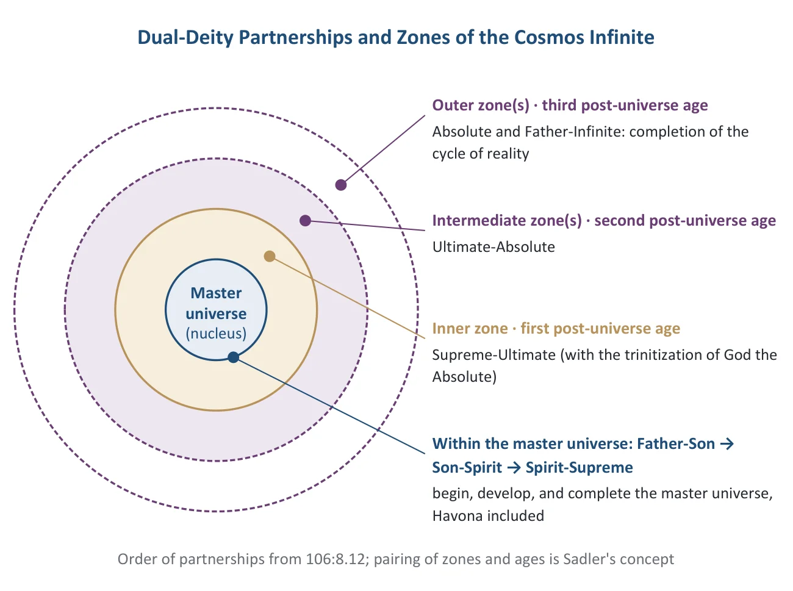

Original: Apéndice XXVII, El crecimiento del Cosmos Infinito (pp. 508–519)
En su último apéndice Sadler pone a prueba hasta dónde pueden llevarnos los conceptos en el Cosmos Infinito. La trinidización de Dios el Absoluto, sugiere, hará surgir de repente una «cabeza de playa en las costas de la infinidad»: la zona interior del Cosmos Infinito. Divide el Cosmos Infinito en zonas interior, intermedia y exterior, y las empareja con tres edades posuniversales y tres Deidades Duales. También reconstruye los siete niveles de función de la Deidad Total como niveles existencial-experienciales.
El Supremo y el Último expresan todo el potencial finito y absonito del universo maestro, y como Supremo-Último lo resumen. Sadler ve su trinidización de Dios el Absoluto como la proyección de esa suma más allá del universo maestro, y la llama una «cabeza de playa en las costas de la infinidad». Puede que no sea una mera figura retórica, dice, sino un acontecimiento literal, del mismo modo que Havona fue eternizado junto con la aparición del Espíritu Infinito.
El Dios de Acción actúa y las bóvedas muertas del espacio están en movimiento. Mil millones de esferas perfectas vienen a existir en un instante.8:1.4
Sadler sospecha que el Cosmos Infinito, en su zona interior, se cristalizará igualmente de una sola vez, sin pasar por etapas. Una porción de la infinidad que poseen los tres Absolutos de potencialidad sería materializada, mentalizada y espiritualizada: se haría experiencial.
De esta comparación Sadler extrae la idea de dos eternidades. Con la trinidización existencial se estableció un ciclo de eternidad [8:1.3]: la primera edad, sin comienzo, la edad de Havona. La trinidización Supremo-Última puede abrir otro ciclo, una eternidad existencial-experiencial: la edad final, sin fin, la edad del Cosmos Infinito. Los dos albores se parecen notablemente. En el primer albor estaban el Padre y el Hijo, dos Deidades existenciales, junto con una base nuclear existencial, la Isla del Paraíso. En el segundo albor están el Supremo y el Último, dos Deidades experienciales, junto con una base nuclear experiencial, el universo maestro completado.
Al pensar en la infinidad, uno se pierde fácilmente en una serie sin fin. Por eso Sadler elige el esquema más sencillo que puede: un marco conceptual de tres zonas.
Sadler reconoce que la única zona relativamente segura es la interior, que puede aparecer de una vez y completa. Las zonas exteriores, que se amplían en secuencia, pueden continuar sin fin en la eternidad.

El Prólogo de El libro de Urantia enumera siete niveles en los que funciona la Deidad Total, desde los niveles estático y potencial, pasando por el asociativo, el creador y el evolutivo, hasta el supremo y el último [0:1.3–1.10]. El nivel absoluto falta en esa lista. Poco después, sin embargo, el texto habla por separado del nivel absoluto.
Existencialmente las Deidades del Paraíso logran este nivel mediante la Trinidad, pero este tercer nivel de la expresión de la Deidad unificadora no está plenamente unificado experiencialmente.0:1.13
Sobre esta base Sadler sostiene que existen niveles post-últimos más allá de los siete. En un momento consideró un esquema de diez niveles, añadiendo tres imágenes especulares de los tres primeros niveles, pero lo dejó de lado. Recordó cómo, en el Apéndice VI, aplicar medidas experienciales a Havona no había producido más que paradojas, y concluyó que en las edades postúltimas actuaría un nuevo mecanismo existencial-experiencial. Una vez completo el universo maestro, cesa el nivel creador, el nivel evolutivo llega a su fin una vez que han emergido las dos Deidades experienciales, y los niveles de supremacía y ultimidad quedan en reposo. Nuevos niveles ocupan su lugar.
| Nivel | Carácter | Explicación de Sadler |
|---|---|---|
| 1 Nivel estático | Existencial (sin cambio) | Deidad autocontenida y autoexistente |
| 2 Nivel potencial | Existencial (sin cambio) | Depósito de lo que la Deidad ha querido pero aún no ha actualizado |
| 3 Nivel asociativo | Existencial (sin cambio) | Primera agrupación de personas y Deidades: la Trinidad del Paraíso |
| 4 Nivel coabsoluto | Nivel nuevo | Nivel post-último en el que funcionan los coabsolutos |
| 5 Nivel reasociativo | Espejo del 3 | Toda la Deidad existencial y experiencial reunida de nuevo en la Trinidad de Trinidades |
| 6 Nivel de potencial actualizador | Espejo del 2 | Los potenciales absolutos se vuelven actuales directamente, sin etapas de maduración |
| 7 Nivel estático-dinámico | Espejo del 1 | La dinámica del crecimiento experiencial penetra lo estático |
En el quinto nivel Sadler contrasta la asociación con la reasociación. En el nivel asociativo la Deidad existencial se hizo una en la Trinidad del Paraíso. En el nivel reasociativo la Deidad existencial y la experiencial se unen de nuevo dentro de la Trinidad de Trinidades. La entrada en el sexto nivel requiere dos condiciones: el potencial de crecimiento de lo finito y lo absonito debe agotarse por completo, y la Deidad y la trinidad experienciales deben abrirse paso hasta el nivel absoluto y tocar directamente a los Absolutos potenciales.
El nombre del séptimo nivel, estático-dinámico, suena extraño, pero Sadler señala que la revelación emplea este mismo término al describir al Absoluto Universal [0:11.14]. Este nivel puede penetrarse, pero nunca agotarse. Si el crecimiento llegara a consumir todo potencial, el nivel volvería a ser estático, pero la revelación dice que eso nunca sucederá.
La estática en crecimiento no puede aparecer nunca en el cosmos total puesto que la base del crecimiento —los actuales absolutos— es no cualificada, y puesto que las posibilidades de crecimiento —los potenciales absolutos— son ilimitadas.115:3.17
No tener fin, añade Sadler, no significa no tener comienzo ni continuación. Las secciones sobre los niveles sexto y séptimo llevan en el original una nota del autor que indica que sus conceptos quedaron incompletos.
En todo el universo maestro Sadler se ha apoyado en un principio: la Deidad Dual abre el camino y la trinidad consolida. Si ese principio vale también en el Cosmos Infinito, las asociaciones de Deidad Dual se pondrán a trabajar antes que la Trinidad de Trinidades. La revelación expone todo el linaje de estas asociaciones en una sola frase.
La asociación Padre-Hijo se ha vuelto Hijo-Espíritu y luego Espíritu-Supremo y sucesivamente Supremo-Último y Último-Absoluto, aun hasta Absoluto y Padre-Infinito —completándose así el ciclo de la realidad.106:8.12
Sadler divide estas seis asociaciones en dos grupos. Las tres primeras (Padre-Hijo, Hijo-Espíritu, Espíritu-Supremo) inician, desarrollan y completan el universo maestro, incluida Havona. Las tres últimas (Supremo-Último, Último-Absoluto, y Absoluto y Padre-Infinito) trabajan más allá del universo maestro. Luego invierte el método del Apéndice VI, donde retrocedió tres veces por detrás de la primera edad, empezando por la Edad Cero, y divide el tiempo posterior al universo maestro en tres edades.
| Edad | Deidad Dual | Zona del Cosmos Infinito | Fundamento y analogía |
|---|---|---|---|
| Primera edad posuniversal | Supremo-Último | Zona interior | El Padre y el Hijo reconocen su unidad y entran en una asociación eterna [8:0.2] |
| Segunda edad posuniversal | Último-Absoluto | Zona o zonas intermedias | La relación del Espíritu con el Hijo en la creación posterior [8:3.3] |
| Tercera edad posuniversal | Absoluto y Padre-Infinito | Zona o zonas exteriores | «completándose así el ciclo de la realidad» [106:8.12] |
Para la segunda edad Sadler añade una esperanza. Si los Ajustadores Personalizados están destinados a ministrar incluso en los niveles del Último-Absoluto [109:7.5], los finalistas también estarán allí, puesto que el potencial eterno de la dotación personal de un finalista se parece a la actualidad que un Ajustador Personalizado ya posee. En cuanto a la relación que Dios el Absoluto tendrá con el Padre Infinito en la tercera edad, Sadler dice que solo puede conjeturarse.
La tabla de apéndices del original enumera otros cuatro apéndices que tienen título pero no texto: XXVIII, La naturaleza del Absoluto de Deidad; XXIX, La naturaleza del Absoluto No Cualificado; XXX, La naturaleza del Absoluto Universal; y XXXI, El concepto del Infinito. Sadler nunca llegó a escribirlos, y por eso este comentario también termina aquí. Sin embargo, los apéndices anteriores ya apuntan en su dirección. Dios el Absoluto crece sin fin, el Absoluto Universal y el Absoluto No Cualificado nunca pueden agotarse, y todo tiende finalmente a experimentar al YO SOY como el Padre-Infinito. Los apéndices no escritos muestran que Sadler dejó su estudio como una pregunta abierta e inconclusa.